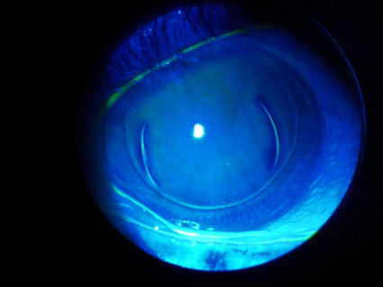
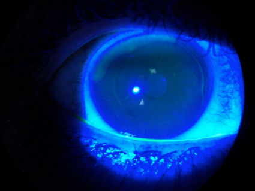
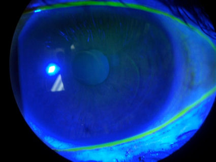

"Среди потенциальных интраоперационных осложнений LASIK,
пожалуй, наиболее опасными являются проблемы, связанные с
созданием лоскута LASIK".
Источник: Осложнения после операции LASIK. Параг А. Маджмудар, доктор медицинских наук. Том XXII "Координационные центры AAO" от 13 сентября 2004 года.
Проблемы, связанные с Lasik? Отправьте отчет о медицинском наблюдении с Управлением по санитарному надзору за качеством пищевых продуктов и медикаментов в режиме онлайн. Кроме того, вы можете позвонить в Управление по санитарному надзору за качеством пищевых продуктов и медикаментов по телефону 1-800-FDA-1088, чтобы сообщить об этом по телефону. бумажный бланк и либо отправьте его по факсу на номер 1-800-FDA-0178, либо отправьте по почте на адрес, указанный внизу страницы 3, либо загрузите Мобильное приложение MedWatcher для сообщения о проблемах с LASIK в FDA с помощью смартфона или планшета. Ознакомьтесь с образцом Отчеты о травмах, полученных с помощью LASIK в настоящее время находится на рассмотрении в FDA.
Пациенты с осложнениями LASIK приглашаются на присоединяйтесь к обсуждению на FaceBook
Осложнения, связанные с использованием лоскута LASIK фотографии любезно предоставлены доктором Эдвардом Бошником.
Эти фотографии были сделаны с помощью щелевой лампы (биом-микроскопа) после закапывания флуоресцеиновый краситель . Для освещения красителя используется синий свет, который окрашивает поврежденные участки роговицы. Краситель оседает на краях лоскута LASIK, который никогда не заживает. Эта открытая рана подвергает пациентов пожизненному повышенному риску инфицирования.
На фотографии ниже показан глаз с двумя лоскутами LASIK. Пять лет назад во время первой операции LASIK устройство, которое разрезает лоскут (микрокератом), вышло из строя, и процедура была прервана. Через неделю была проведена вторая операция LASIK. Две изогнутые линии, заполненные краской, - это оригинальный деформированный лоскут. Более крупная круглая линия, проходящая по окружности роговицы, - это второй лоскут LASIK. В результате этих операций зрение пациента сильно искажается. В очках пациент не может видеть лучше, чем 20/70.

На фотографии ниже показан неправильной формы лоскут LASIK, образовавшийся в результате движения глаз. После процедуры пациенту сказали, что не было необходимого оборудования для предотвращения движения глаз. Процедуру пришлось выполнять дважды. Обратите внимание на неправильную форму лоскута.

На следующем снимке показана роговица с двумя лоскутами LASIK. Обратите внимание на две дуги, проходящие от 6 до 2 часов. Пациентке была проведена повторная процедура LASIK через несколько недель после первичной, и хирург вырезал второй лоскут внутри исходного лоскута, вместо того чтобы приподнимать его.

Ниже приведен снимок роговицы в поперечном сечении у пациента, который после операции LASIK носил жесткие склеральные контактные линзы. Пациенту была проведена операция LASIK в 2006 году. Зеленая стрелка указывает на поверхность контактной линзы. Красные стрелки указывают на повреждение роговицы в результате создания лоскута. Структура этой роговицы нарушена. Зрение пациента сильно искажено без линз. Пациент также страдает от чрезмерной сухости глаз. Нажмите на картинку, чтобы увеличить изображение.
Хирургические ошибки при вырезании лоскута могут привести к серьезному повреждению роговицы и потере зрения. Здесь можно увидеть изображения некоторых осложнений при удалении лоскута.: Ссылка
Существует несколько типов осложнений с клапанами, включая тонкие клапаны, толстые клапаны, неправильные клапаны, частичные или неполные клапаны, застегивающиеся на пуговицы клапаны в форме бублика, свободные колпачки (клапан полностью отрезан), складки на клапанах и децентрализованные клапаны.
Поверхностные абляции, такие как ФРК, которые не требуют разрезания роговичного лоскута, пользуются популярностью у хирургов, которые хотят избежать осложнений с использованием лоскута.
"Осложнения процедуры LASIK могут быть катастрофическими и необратимыми... Процедура LASIK имеет серьезные врожденные дефекты, связанные с формированием лоскута."; С. Перси Амойлс, доктор медицинских наук
Источник: J Refract Surgery. Том 15, март/апрель (дополнительно) 1999
" В интервью за интервью хирурги упоминали серьезные
осложнения с использованием лоскута в качестве основной причины, по которой они либо прекратили выполнение
LASIK или ищут менее инвазивные альтернативы.";
Источник: Офтальмологическое управление, сентябрь 2004 г. Что ждет LASIK дальше? Автор: Джерри Хелцнер
Лоскутная петля при тонкослойном лазерном кератомилезе In Situ: серия случаев и обзор.
Роговица. 6 мая 2010 года.
Джейн В., Мхатре К., Шоме Д.
ЦЕЛЬ: Проанализировать клинические особенности и факторы риска, приводящие к формированию лоскутной петли во время лазерного кератомилеза in situ (LASIK), и визуальный результат после удаления.
МЕТОДЫ:: Были ретроспективно проанализированы медицинские карты всех глаз, у которых во время LASIK образовалась складка-петля. Были проанализированы измерения до LASIK и интраоперационные параметры для прогнозирования факторов риска.
РЕЗУЛЬТАТЫ: В общей сложности 944 глаза подверглись операции LASIK в течение всего периода исследования. На четырех глазах (0,42%) была выполнена частичная коррекция толщины лоскута. Операция LASIK с использованием тонкого лоскута (толщина лоскута <=90 мкм) была выполнена на 230 глазах. Частота образования петель в случаях применения тонкослойной лазерной коррекции составила 1,7% (4 из 230). Процедуры LASIK были выполнены в офтальмологическом институте высшего профессионального образования в период с октября 2006 по декабрь 2008 года. Средний возраст пациентов составил 31 +/- 8.7 лет. Средняя сферическая аномалия рефракции левого глаза до абляции составила -7.8 +/- 1.2 диоптрий (D), средняя кератометрия по более крутой оси - 44.0 +/- 1.56 D, а средняя пахиметрия - 520 +/- 16 mum. Во всех 4 случаях на втором (левом) глазу произошло защемление лоскута. Всем пациентам была выполнена операция LASIK с использованием тонкого лоскута с лезвием длиной 90 мм с использованием микрокератома Moria M2. Диаметр лоскута составил +2/7,5 и 0/8,0 для каждого из 2 глаз. Через двенадцать недель после первоначальной процедуры трансэпителиальная фототерапевтическая кератэктомия/фоторефракционная кератэктомия была выполнена на всех 4 глазах. Визуальный результат после аблации составил 20/20 и 20/25 на 2 глазах соответственно. У одного пациента в течение последнего 1 года наблюдения был обнаружен слабый субэпителиальный рубец.
ВЫВОДЫ: Формирование лоскутной петли значительно чаще встречается на втором глазу и при использовании микрокератома Moria M2 и лезвия длиной 90 мкм. При использовании тонкого лоскута LASIK следует отказаться от практики использования того же лезвия микрокератома для другого глаза, которой обычно придерживаются во многих центрах рефракционной хирургии. Интраоперационная субтракционная пахиметрия может быть полезна для прогнозирования риска образования петлицы на втором глазу. Эти меры предосторожности особенно обязательны при использовании тонкослойной технологии LASIK, независимо от других сопутствующих факторов риска.
Поломка колеблющегося штифта микрокератома во время создания лоскута LASIK.
Постоянная линза переднего отдела глаза. 5 января 2010 года.
Балачандран С, Асланидис И.М.
Отрывок: Мы описываем случай с 40-летней женщиной-миопом, которая обратилась за двусторонней лазерной коррекцией. Во время операции во время создания лоскута сломался осциллирующий штифт микрокератома, что привело к отсоединению одноразового лезвия от двигателя. В результате лоскут получился неправильной формы с отсутствующими фрагментами. Процедура была отменена, и поврежденный частичный лоскут был восстановлен в наилучшем положении, насколько это было возможно. У пациентки показатель BCVA составил 6/7,5. С тех пор производитель сообщил о принятии корректирующих мер для предотвращения этой проблемы в будущем. Этот случай служит напоминанием о том, что, несмотря на заботу и техническое обслуживание со стороны пользователя и производителя, могут возникать экстремальные и редкие сбои в работе оборудования.
Частота применения, тактика лечения и визуальные результаты применения кератомилезных лоскутов in situ с помощью лазера в форме пуговицы.
J Рефракционная хирургия катаракты, май 2009 г.; 35(5):839-45.
Аль-Мезайн Х.С., Аль-Амро С.А., Аль-Обейдан С.
Отделение офтальмологии медицинского колледжа Университета короля Сауда, Эр-Рияд, Саудовская Аравия. almez2001@hotmail.com
ЦЕЛЬ: Описать частоту применения, тактику лечения и визуальные результаты применения лоскутов для лазерного кератомилеза in situ (LASIK) с фиксацией в виде петли.
МЕСТО ПРОВЕДЕНИЯ: Частная практика, Эр-Рияд, Саудовская Аравия.
МЕТОДЫ: В этом ретроспективном обзоре были выявлены глаза, у которых во время операции LASIK образовались складчатые клапаны. Были получены предоперационные, интраоперационные и послеоперационные данные для выявления факторов, способствующих прогнозированию этого осложнения.
РЕЗУЛЬТАТЫ: Из 4250 первичных процедур LASIK было выявлено 17 глаз (0,4%) с закрылками в виде петель. При использовании микрокератома Hansatome петельки образовались в 64,7% случаев, а при использовании микрокератома Moria - в 35,3%. Частота образования петельчатых лоскутов составила 0,62% и 0,19% соответственно (Р = 0,03). Лазерная абляция была выполнена одновременно с формированием петлицы на 8 глазах (47,1%), а на остальных глазах была прервана. Повторное лечение было проведено на 10 глазах (58,8%); из них на 6 глазах была проведена повторная операция LASIK, а на 3 - поверхностная абляция. Конечная сферическая эквивалентная рефракция составила -0,38 диоптрий +/-0,79 (SD). У двух глаз наблюдалась окончательная потеря более чем на 2 линии наилучшей скорректированной остроты зрения (BCVA). Среднее значение потери линий BCVA составило 0,72 на глазах, которым был проведен полный курс LASIK, 0,62 на глазах, которым был отменен курс LASIK с последующим повторным лечением методом LASIK, и 0,80 на глазах, которым был отменен курс LASIK с последующим повторным лечением методом поверхностной абляции.
ВЫВОДЫ: Лоскуты с петельками чаще появлялись на втором из 2 последовательно обработанных глаз. Микрокератомы, которые позволяют получить лоскут большего диаметра, с большей вероятностью приводили к образованию петелек для лоскутов. Наименьшая потеря BCVA была достигнута, когда процедура LASIK была прервана, а затем повторена после стабилизации рефракции.
Петлицы во время операции LASIK: этиология и исход.
Рефракционная хирургия, 2007, май; 23(5):472-6.
Лихтер Х., Столтинг Р., Уоринг 3-й, Рассел Джи, Карр Дж.
Вью, Атланта, Джорджия, США. lichter_henia@yahoo.com
ЦЕЛЬ: Описать клинические особенности и исход лечения глаз с лоскутной петлей во время LASIK.
МЕТОДЫ: Был проведен ретроспективный обзор, чтобы выявить глаза, у которых во время пересадки микрокератома Hansatome образовалась петля из лоскута. Были получены данные до, интра- и послеоперационные данные для выявления факторов, способствующих появлению петлицы.
РЕЗУЛЬТАТЫ: В период с июня 2001 по сентябрь 2002 года было выявлено пять пациентов с петлицами (5 [0,06%] глаз из 7672 первичных процедур LASIK). Средний возраст пациента составил 49.2 +/- 11.3 лет (от 37 до 66 лет). Средняя дооперационная сферическая эквивалентная рефракция составила 4.92 +/- 2.90 диоптрий (D) (от -2,25 до -9,50 D). Среднее значение кератометрии составило 45.59 +/- 1.15 D (диапазон: от 43,90 до 47,60 D). Все 5 петельчатых лоскутов были обнаружены на втором из 2 последовательно обработанных глаз (Р = 0,03). Петлица образовалась на 2 (0,26%) из 778 глаз, где использовалась 160-микрометровая пластина для микрокератома, и на 3 (0,06%) из 4350 глаз, где использовалась 180-микрометровая пластина (Р = 0,16). Два глаза были подвергнуты лазерной абляции во время формирования петлицы. В тех случаях, когда не проводилось лечение, лоскут петлицы сам по себе вызывал миопическое сферическое изменение на -0,50 D и астигматизм на 0,70 D. Один из 5 глаз потерял 2 линии наилучшей остроты зрения с коррекцией очками; этот глаз подвергся лазерной абляции сразу после формирования петлицы.
ВЫВОДЫ: Петлицы значительно чаще образуются на втором из двух последовательно пролеченных глаз. Если лоскут на первом глазу кажется тонким, следует рассмотреть возможность использования нового лезвия для второго глаза. Следует соблюдать осторожность при проведении лазерной абляции сразу после формирования петлицы.
Отказ от ответственности: Информация, содержащаяся на этом веб-сайте, представлена с целью предупреждения людей об осложнениях процедуры LASIK перед операцией. Пациентам, у которых возникли проблемы с процедурой LASIK, следует обратиться за консультацией к врачу.